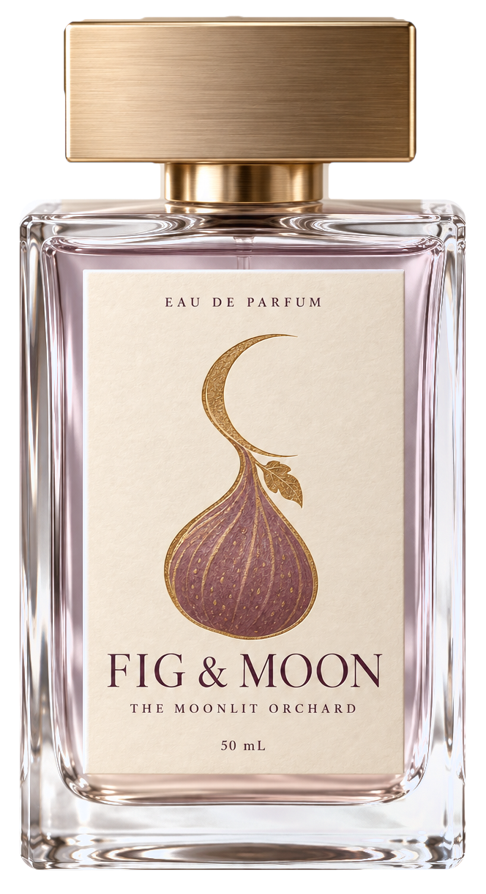
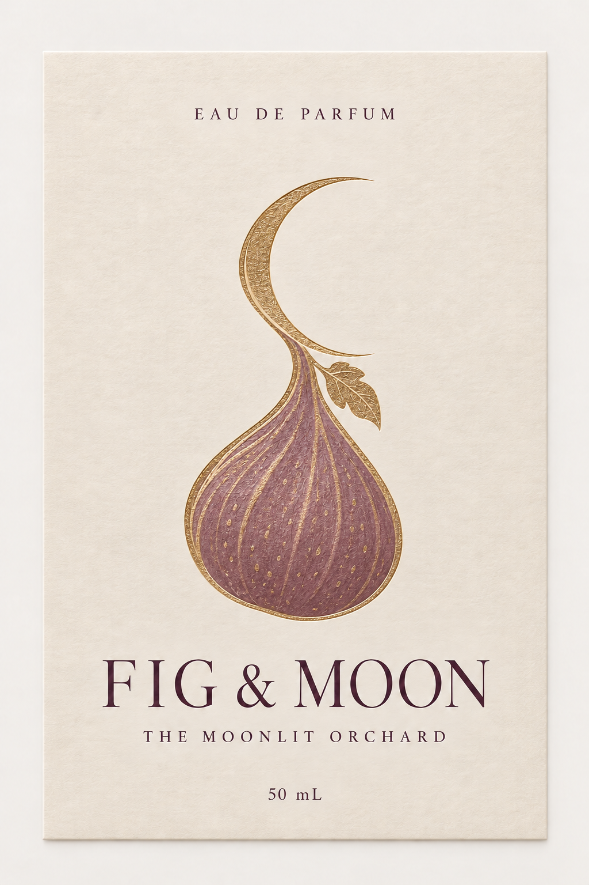

I 熟す Ripening
陽だまりで、
イチジクは熟していく。
果実の皮に残る陽のぬくもり。指先でつぶした若葉の、青い香り。その奥に、ほんのりミルクと蜂蜜。果樹園はまだ、秘密を果実の中にしまっています。
Eau de Parfum The Moonlit Orchard
月夜の果樹園へ、ようこそ
Scroll
Moonrise 月の出
そのまま下へ。果樹園の奥へ進みます。
I 熟す Ripening
果実の皮に残る陽のぬくもり。指先でつぶした若葉の、青い香り。その奥に、ほんのりミルクと蜂蜜。果樹園はまだ、秘密を果実の中にしまっています。
II 昇る Rising
日が傾くと、やわらかな金色はそっと枝を離れて空へ。あとに残るのは、葉の影と、ひんやりした草の気配だけ。
III 月 Moonlight
イチジクがあった場所に、三日月がひとつ。足もとの木々は静かに光ります。FIG & MOON は、そんな夜のひとときをガラスに閉じ込めた香り。熟していて、銀色で、少しだけ幻のような。
Scent 香り
時間を選んでみてください。月も一緒に姿を変えます。
夕暮れ ・ トップノート
ひんやりと青く、明るく。日が落ちるころ、葉からたちのぼるはじまりの香り。気づいたときには、もう淡く消えていきます。
ミルキーで蜜のような果実に、粉っぽい花が重なります。香りの中心にあたる、肌にのる月明かりのようなやわらかさ。
夜が明けたあとも続く、あたたかな木とアンバー。袖や襟にそっと残る、静かな余韻です。
※ 香りの紹介は、このコンセプトサイトのための架空の文章です。

Bottle ボトル
Eau de Parfum ・ 50 mL
肩の角がすっきりした、透明な角型のガラス瓶。ほんのりローズ色の液体を、ブラッシュドゴールドのキャップが静かに閉じます。ラベルには、イチジクの茎が三日月へとつながる、ひとすじの金線。この香りの物語がそのまま描かれています。
Label ラベル
金箔のイチジク、プラム色の文字、キャンドルのようにあたたかいクリーム色の紙。ラベルの上をなぞると、金が光を拾います。イチジクを空へ舞い上げた、あの光です。

Moonlit List 予約
メールアドレスを登録すると、実際のサービスならサンプルをお届けします。これはコンセプト用のデモで、送信も保存もされません。